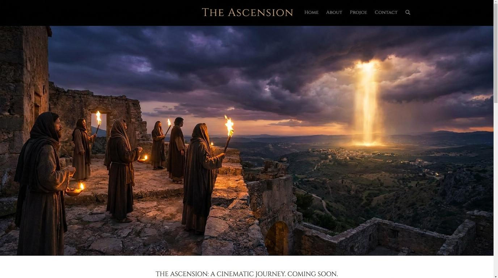

一、 夜半的警號：束緊腰帶，點亮心燈
路 12:35-40「你們腰裡要束上帶，燈也要點著，自己好像僕人等候主人從婚姻的筵席上回來。他來到，叩門，就立刻給他開門...」
關鍵原文
警醒 (γρηγορέω / gregoreo)
意為「保持清醒、不睡覺、時刻準備著」。這是一個主動的狀態。
關鍵問題
為什麼我們容易在等待主再來時陷入沉睡？
漫長的等待與世俗的安逸容易麻痹屬靈敏銳度。
“我們應當如此生活：若基督今天到來，我們無需改變自己的行程，只需改變我們的心情去迎接祂。” —— 司布真

— 路加福音 12:40
「主啊，求祢喚醒我們沉睡的靈魂。在這充滿誘惑與安逸的世代，賜我們警醒的心，使我們束緊腰帶，點亮生命的燈。教導我們作忠心有見識的好管家，不畏懼因真理帶來的代價與世人的不解，並賜我們屬靈的洞察力去分辨時代的徵兆。願我們在祢再來之時，能無愧地見祢的面，被祢稱讚為又良善又忠心的僕人。奉主耶穌基督的名求，阿們。」
「你們腰裡要束上帶，燈也要點著，自己好像僕人等候主人從婚姻的筵席上回來。他來到，叩門，就立刻給他開門...」
警醒 (γρηγορέω / gregoreo)
意為「保持清醒、不睡覺、時刻準備著」。這是一個主動的狀態。
為什麼我們容易在等待主再來時陷入沉睡？
漫長的等待與世俗的安逸容易麻痹屬靈敏銳度。
“我們應當如此生活：若基督今天到來，我們無需改變自己的行程，只需改變我們的心情去迎接祂。” —— 司布真
「多給誰，就向誰多取；多託誰，就向誰多要。」
管家 (οἰκονόμος / oikonomos)
指被委託管理主人家務、財產與人員的人。僅有管理權與責任。
「多給誰，就向誰多取」對今天的基督徒意味著什麼？
我們擁有的資源都是神的「託付」。濫用或虛度光陰是對神的不忠。
“神給我們恩賜，不是為了讓我們建立自己的名聲，而是為了讓我們建立別人的生命。” —— 提摩太·凱勒
「我來要把火丟在地上...你們以為我來，是叫地上太平嗎？我告訴你們，不是，乃是叫人紛爭。」
分裂 (διαμερισμός / diamerismos)
指分開、割裂。在此指信仰所引發的立場抉擇與關係破裂。
耶穌被稱為「和平的君」，為何這裡卻說祂來是為叫人起紛爭？
真理具有排他性。當光照進黑暗，必然引起反撲與價值觀衝突。
“當基督呼召一個人時，祂是叫他來死。” —— 潘霍華
「假冒為善的人哪，你們知道分辨天地的氣色，怎麼不知道分辨這時候呢？」
分辨 (δοκιμάζω / dokimazo)
意思是去測試、檢驗、看透事物的本質。
我們如何分辨「這個時候」，並做出正確的回應？
透過聖經真理解讀世界。趁著還有恩典的時機，趕緊與神和好。
“這個時代的悲劇在於，我們有太多的專業知識，卻極度缺乏屬靈的洞察力。” —— 陶恕
各位弟兄姊妹，今天我們要來思想一段極具挑戰性的經文：路加福音12章35到59節。在這個追求安逸、充滿不確定性的世代，耶穌的教導猶如午夜的警鐘，直接敲打著我們的靈魂。今天我們講道的主題是：「末世的警醒與抉擇：你準備好迎接主了嗎？」我們將透過四個段落，來檢視我們屬靈的現況。
在路加福音中，耶穌告訴我們：「你們腰裡要束上帶，燈也要點著...你們也要預備，因為你們想不到的時候，人子就來了。」(路12:35, 40) 古時的東方人穿著長袍，要工作或行動時，必須把腰帶束緊；黑夜中等待，必須保持燈火通明。這是一種「隨時準備好」的戰鬥姿態。我們為什麼容易沉睡？因為這個世界太舒適，或者我們的憂慮太沉重，以至於我們忘記了耶穌會再來。司布真曾說：「我們應當如此生活：若基督今天到來，我們無需改變自己的行程，只需改變我們的心情去迎接祂。」弟兄姊妹，你的屬靈腰帶鬆懈了嗎？你的心燈還有油嗎？
彼得問這比喻是指著誰說的？耶穌回答，這是對所有被託付責任的人說的。耶穌說：「多給誰，就向誰多取；多託誰，就向誰多要。」(路12:48) 我們常以為自己是生命的主人，但聖經說我們只是「管家」。神給了我們時間、財富、才幹，甚至福音的真理，這一切都是託付！一個壞管家以為主人遲延，就動手打人、吃喝醉酒，這代表濫用恩典與權力。提摩太·凱勒提醒我們：「神給我們恩賜，不是為了讓我們建立自己的名聲，而是為了讓我們建立別人的生命。」我們必須在忠心與見識上，經得起主人的查帳。
耶穌說出了讓人震驚的話：「你們以為我來，是叫地上太平嗎？我告訴你們，不是，乃時叫人紛爭。」(路12:51) 為什麼和平的君王會帶來分裂？因為光與黑暗不能相通。當你決定依照聖經的標準生活，當你決定拒絕職場上的妥協，當你決定不再參與家族中的偶像崇拜，衝突就必然發生。這不是我們好鬥，而是真理的排他性。就如潘霍華所說：「當基督呼召一個人時，祂是叫他來死。」我們必須準備好，為了跟隨基督，我們可能要承受最親密關係中的撕裂。信仰的火，煉淨我們，也劃清了我們與世界的界線。
耶穌責備當時的人：「假冒為善的人哪，你們知道分辨天地的氣色，怎麼不知道分辨這時候呢？」(路12:56) 現代人懂得看股市走勢、看天氣預報、看政治風向，卻對屬靈的末世徵兆極度遲鈍。陶恕曾感嘆：「這個時代的悲劇在於，我們有太多的專業知識，卻極度缺乏屬靈的洞察力。」耶穌呼籲我們，趁著「還在路上」——也就是還有恩典、還有氣息的時候，趕緊與神和好，解決生命中罪的問題。不要等到見了審判官，那時就再也沒有機會了。
弟兄姊妹，末世已經來到，警醒、忠心、分辨是我們無可推諉的責任。願我們每天束緊腰帶，作良善的管家，勇敢面對真理的代價，在主再來的那日，能歡歡喜喜地迎見祂！
「當基督呼召一個人時，祂是叫他來死。」
— 潘霍華 《追隨基督》
「等待不是被動的休息，而是主動的預備。」
— 盧雲
「神給我們恩賜，不是為了讓我們建立自己的名聲，而是為了讓我們建立別人的生命。」
— 提摩太·凱勒 《揮霍的上帝》
「時間是神給人最公平的資本，你如何使用時間，就決定了你在永恆中的價值。」
/ 唐崇榮 《時間與永恆》
「即使我知道明天世界就要毀滅，我今天依然要種下一棵蘋果樹。」
/ 馬丁·路德
⚠️ 網路資料可能出錯，請小心查證、謹慎使用。